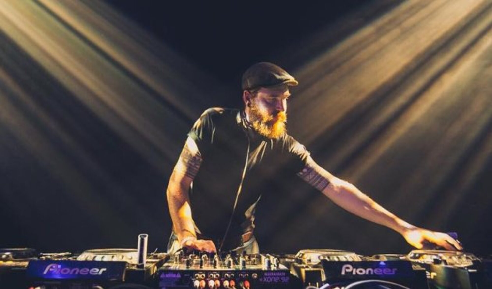

Inicio
Artistas
Podcasts
Contacto
Releases
En esta sección encontras a los artistas de la agencia con agenda abierta para contrataciones
BEN KLOCK
Having become a Berghain resident in 2005, he has since established himself at the forefront of Berlin’s modern Techno movement, an ever-present symbol of the city’s vast musical landscape. His long-standing relationship with the notorious Techno institution has formed the backdrop to his success, providing an invaluable platform that has allowed him to become one of the most in-demand DJ-producers of the current generation.
RODHAD

At the the end of the 1990s Rødhåd laid the groundwork for his DJ-career. He organised small open-air-parties in the outskirts of Berlin just for the fun of it. The word spread quickly far beyond Berlin’s and Germany’s borders about the new kid on the block. His specific style, consisting of Dub-Techno mixed with percussive grooves and his timeless, perfect mixing technique garnered him widespread recognition.
OSCAR MULERO
La carrera de Oscar Mulero ha sido tan prolífica y duradera como la evolución de la música dance. Como figura clave en su desarrollo, Oscar siempre ha absorbido nuevas tendencias y ha mantenido su estilo en el lado más avanzado de la música electrónica de baile, desde finales de los años 80 hasta nuestros días. Es imposible entender su genio sin tener en cuenta el trabajo incansable que ha llevado a cabo detrás de los platos durante más de dos décadas. En cuanto a la producción, lleva editando discos desde finales de los noventa, con incontables vinilos de 12" y varios álbumes de estudio, así como remixes para los mejores agentes de la escena.
DVS1
Immersed in the heydays of the ’90s Midwest rave scene, DVS1 has gained a highly-respected reputation for his versatile skills, infectious energy and physical power behind the decks. As a resident DJ of Berlin’s infamous Berghain / Panorama Bar, he moves floors of the world’s most prestigious and best venues. After his first original releases on Klockworks and Transmat, he was not only introduced to a bigge audience, hence creating a strong fellowship for his own imprints: While HUSH showcase DVS1’s love for deep, purist techno and only his music, Mistress Recordings reflects his wide range as beat and rhythm addict presenting some of his secret weapons that touches all corners of the dance floor and beyond.
Volver arriba